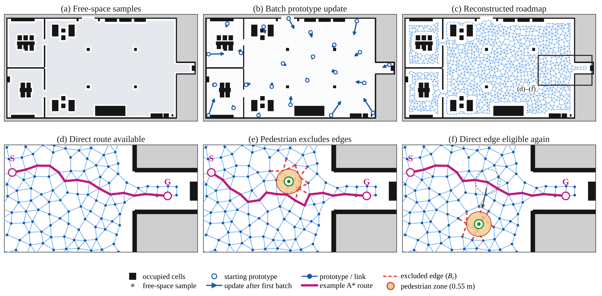

Technical Approach
![Navigation pipeline: the robot uses ROS 2 Humble and Nav2. A 2D LiDAR supplies scans for human detection and costmap updates; the physical robot localizes with AMCL, while simulation uses Gazebo ground truth. Clusters of LiDAR returns provide pedestrian positions for a Gaussian social-cost layer. A roadmap node (DBL-GNG, GNG, PRM, or Voronoi) serves global path requests, searches the graph with A*, assigns edge costs from the costmap, cuts edges within 0.55 m of detected people, applies shortcut smoothing, and resamples the path at 0.05 m intervals. MPPI or TEB then drives the robot.](static/images/fig1.png)
Navigation pipeline: the robot uses ROS 2 Humble and Nav2. A 2D LiDAR supplies scans for human detection and costmap updates; the physical robot localizes with AMCL, while simulation uses Gazebo ground truth. Clusters of LiDAR returns provide pedestrian positions for a Gaussian social-cost layer. A roadmap node (DBL-GNG, GNG, PRM, or Voronoi) serves global path requests, searches the graph with A*, assigns edge costs from the costmap, cuts edges within 0.55 m of detected people, applies shortcut smoothing, and resamples the path at 0.05 m intervals. MPPI or TEB then drives the robot.


DBL-GNG roadmap reconstruction and pedestrian-aware search, illustrated on the simulated lobby map: (a) free-space samples, (b) starting prototypes and their displacement after the first batch update, (c) base roadmap after 60 epochs, (d)-(f) the A* route changes as a pedestrian enters and leaves the 0.55 m exclusion zone. This is an illustrative run with schematic pedestrian positions.